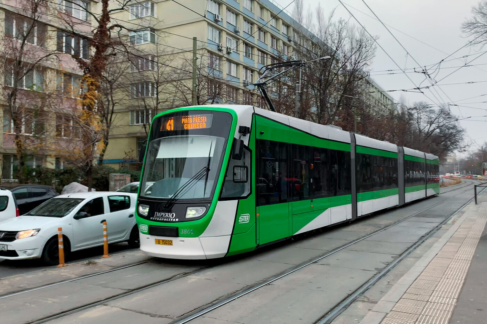

Cabine șofer, ferestre laterale, uși pasageri, separatoare interioare. Compatibilitate retrofit pentru flotele Imperio (Astra) și Bozankaya în service în 11 municipii.

Acoperim toate suprafețele vitrate ale unui tramvai modern de podea joasă — de la parbrizul curbat al cabinei șoferului până la separatoarele interioare ale zonei pasageri. Produsele sunt configurate pe arhitecturile Astra Imperio Metropolitan și Bozankaya, dar pot fi adaptate pentru orice platformă cu radius compatibil.
Produsele VAGOGLASS mapate pe pozițiile tipice dintr-un tramvai urban.
| Cabină șofer (parbriz + laterale) | RAILAM curbat · 6+6 mm laminat · lead time 4 – 6 săptămâni |
|---|---|
| Ferestre laterale pasageri | RAILDUR · H (heat-soak) · 6 – 8 mm călit · lead time 2 – 3 săptămâni |
| Uși pasageri (glisante / culisante) | RAILDUR · S · 6 mm călit serigrafiat · lead time 2 – 3 săptămâni |
| Separatoare interioare & partiții cabină | RAILSMART (PDLC on/off) sau RAILDUR · S · 6 – 8 mm · lead time 3 – 4 săptămâni |
Flotă în livrare către Societatea de Transport București — tramvaie articulate de 36 m, podea 100% joasă, capacitate 322 pasageri. VAGOGLASS este furnizor pentru ferestrele laterale, ușile pasageri și partițiile interioare ale seriei.
Flotă Bozankaya intrată integral în service la finalul lui 2024. Pipeline activ pe retrofit piese de schimb și accident replacement — proximitatea fabricii Popești-Leordeni asigură lead time sub 72 h pentru intervenții urgente.
Investiție de 310 mil lei pentru flota nouă Oradea Transport Local, finanțată prin PNRR. Pipeline VAGOGLASS deschis pe ferestre laterale serie nouă + contract-cadru retrofit pentru flota Astra existentă.
Companie de Transport Public Iași a semnat în aprilie 2024 contractul pentru 18 tramvaie Bozankaya, valoare 141,4 mil lei. Pipeline activ pentru furnizare componente vitrate seria nouă și retrofit flotă existentă.
Dincolo de cele 100 de Imperio Metropolitan deja contractate, STB analizează achiziția a încă până la 250 de tramvaie noi pentru modernizarea completă a flotei capitalei. Este cel mai mare singur target pe tramvai din regiune pentru următorii 5 ani — pregătim configurări tehnice și capacitate de producție anticipat.
Toate componentele vitrate livrate pentru tramvai sunt produse, testate și documentate conform setului de standarde de mai jos.
Trimite-ne platforma (Imperio, Bozankaya, alta) și volumul — revenim cu BOM + ofertă tehnică în 24 ore.
Cere ofertă tehnică →